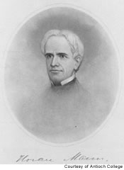

The Antioch Tradition | Mann, Morgan Legacy
It’s likely you’ll first hear the buzz about educator and statesman Horace Mann when you attend an Antioch open house or Friday information session. This is the start of a rich lesson in the history of higher education and Antioch’s place at the heart of it.
Mann became Antioch’s first president in 1853, after serving four years as a Massachusetts congressman. His influence went far beyond that state. Mann’s indictments of slavery, efforts to establish hospitals for the mentally ill and visions for public education are legend.
Education as a Right
It was Mann who, in the 1830s, spearheaded the creation of the first schools for teacher training and the first free school-district libraries. Mann insisted education was a right for every child and it was a state’s responsibility to provide that education. His work led to the first state law that required compulsory school attendance.
Mann arrived at Antioch College, newly created by the Christian Church in Yellow Springs, Ohio. His goal: at age 56, to put into practice a lifetime of innovative educational ideas.
At the core of Mann’s plan was his belief in nonsectarian education that embraced all religions and welcomed all men and women. In the 1850s, Ohio had 26 colleges, all small and all sectarian. As one historian noted, Mann was “crucified by crusading sectarians," who whittled away at his authority. Antioch’s financial struggles proved to be Mann’s final undoing.
“Some Victory for Humanity"
"Be ashamed to die until you have won some victory for humanity," he told the class of 1859. Shortly after that famous commencement address, he collapsed from exhaustion. Two months later, Horace Mann was dead. His ideals prevailed, however, and continue to be part of Antioch’s fabric.
For this — to a great extent — Antioch has Arthur Morgan to thank. Antioch’s charismatic president from the 1920s to the mid-1930s, Morgan did much to shape the school’s character and values. Morgan said education’s greatest defect was that it didn’t emphasize personal and social responsibility.
 Burton Clark, in a study of higher education called “The Distinctive College: Antioch, Reed & Swarthmore" (Transaction Publishers, 1992), described Morgan as Antioch’s transforming president, a man whose personal dynamism turned Antioch into the progressive college Horace Mann had envisioned.
Burton Clark, in a study of higher education called “The Distinctive College: Antioch, Reed & Swarthmore" (Transaction Publishers, 1992), described Morgan as Antioch’s transforming president, a man whose personal dynamism turned Antioch into the progressive college Horace Mann had envisioned.
Morgan was a self-educated man with a career history as a respected flood control engineer. “He moved from engineering to social engineering in pursuit of utopia, and his utopianism was a critical element in the revision of the college," Clark wrote.
Diving off the Dock
Morgan’s academic reforms gave Antioch a leading edge. With a more perfect society as his goal, Antioch students would learn ways to become more politically, socially and economically active in their communities. It was a cooperative education that combined learning with jobs and community involvement. This remains an integral part of the learning experience at Antioch University Seattle.
"Courage to dive off the dock" is how writer Bruce Barton characterized Arthur Morgan and the ideal Antioch student in 1922. Barton wrote for the “American Mercury," a magazine with a circulation of two million in the early 1920s. Those words — “Courage to dive off the dock" — still typify the pursuit of an Antioch education. Are you ready to make the dive?
Click to learn more about AUS's Horace Mann Award winners or to read a first-hand recollection of Arthur Morgan from Academic Dean Ormond Smythe. To learn more about the history of Antioch College at Yellow Springs, click here.